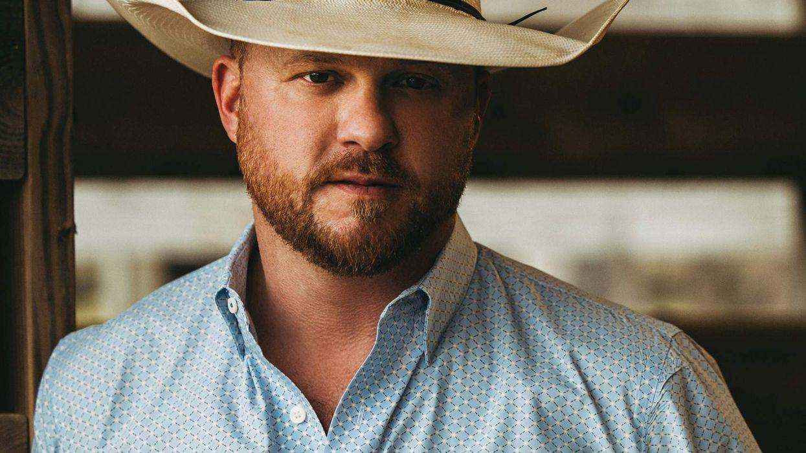
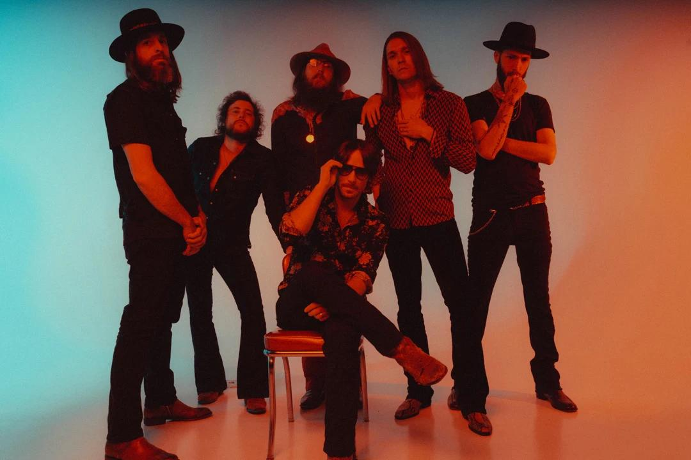
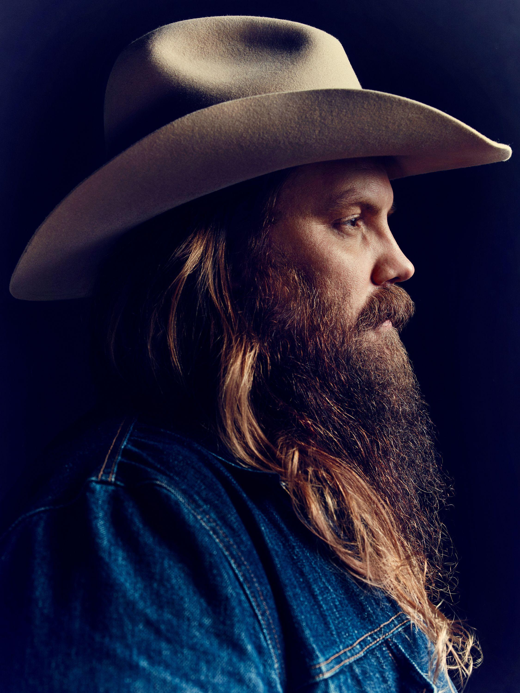
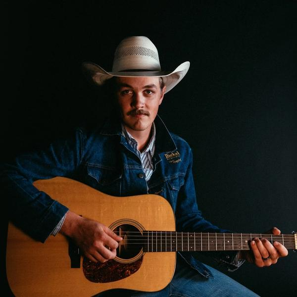
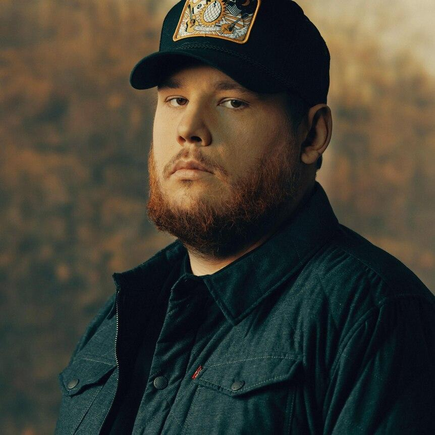

SEXTA · 16 OUT · 22H30 · PALCO ESTRADA
George Strait
Uma das maiores referências da história da música country.
Três noites reunindo grandes nomes do country americano, artistas que marcaram gerações e novas vozes que continuam levando o gênero pelas estradas.
Uma das maiores referências da história da música country.

Country moderno com raízes tradicionais e presença de palco.

Southern rock e country em uma apresentação de peso.

Clássicos que atravessaram décadas e ajudaram a definir o country.

Uma das vozes mais marcantes da geração atual do gênero.

Uma nova geração inspirada diretamente pelo country dos anos 90.

Uma noite encerrada por uma das artistas mais reconhecidas do country.

Sucessos atuais e uma das principais vozes do country contemporâneo.